遊びで植物を育てよう
2024/12/15
みかんの選定をしました。
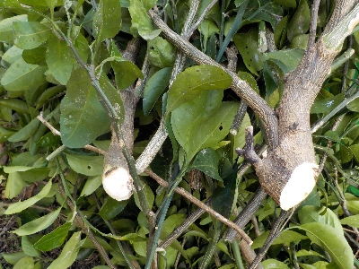
冬の剪定シーズンになりました。
まずは背が低くて剪定が簡単な温州みかんとスイートスプリングの剪定をしました。
【みかんTOP】
【果物TOP】
【園芸TOP】
2024/11/04
温州みかんが美味しくなったので収穫しました。
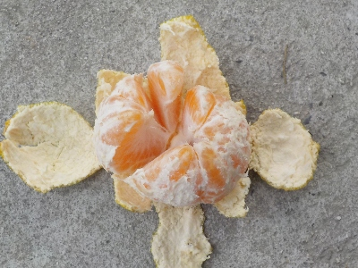
そろそろ食べごろかなと思い味見しました。
美味しくなってたので、大きくて黄色くなったもを何個か収穫しました。
【みかんTOP】
【果物TOP】
【園芸TOP】
2024/09/29
赤茶色の錆っぽいみかんがありました。
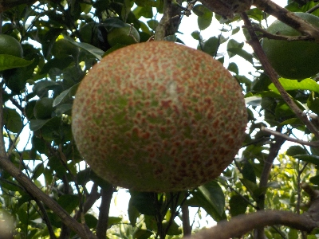
黒点病なのかな？なんだか奇妙なみかんです。
きっと食べれないんだろうな。捨てた方がいいんだろうな。
【みかんTOP】
【果物TOP】
【園芸TOP】
2024/09/27
ミカンがすくすく育っていると思っていましたが、根っこはなかったです。
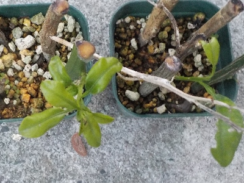
葉っぱが育って大きくなっていたので、絶対根っこが出ていると思っていました。
鉢上げしようと抜いてみたら根っこがありませんでした。
前にもこんなことあったな。またか。
まだ枯れていないので、これはこのまま育てようと思います。
【みかんTOP】
【果物TOP】
【園芸TOP】
2024/07/06
失敗したと思っていたミカンの挿木から芽が出ていました
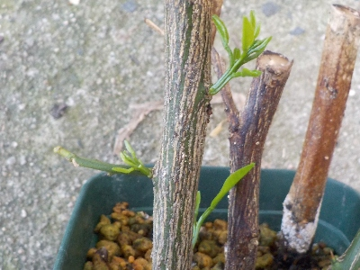
また失敗したと思っていたみかんの挿木から、新芽がちょこちょこと出ています。
昔もこんなことあったなー。でも昔は根っこが出ていませんでした。
今回はどうでしょう。
【みかんTOP】
【果物TOP】
【園芸TOP】
2024/06/09
ミカンの挿し木は失敗しました。
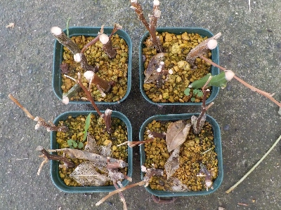
いつもどおりです。
一部枝が緑色ですが 、葉っぱがないので今後の成長はないでしょう。
【みかんTOP】
【果物TOP】
【園芸TOP】
2024/03/24
今年もまたミカンの挿し木をしました。
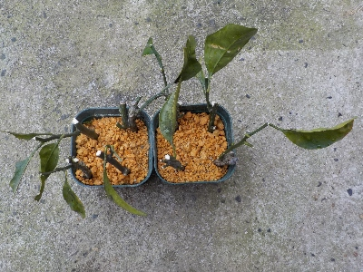
剪定した枝を使ってミカンの挿し木をしました。これは温州みかん。
これはスイートスプリング。
今年は少し太めの枝でやりました。
【みかんTOP】
【果物TOP】
【園芸TOP】
2023/12/10
緑色のスイートスプリングを収獲し始めました。
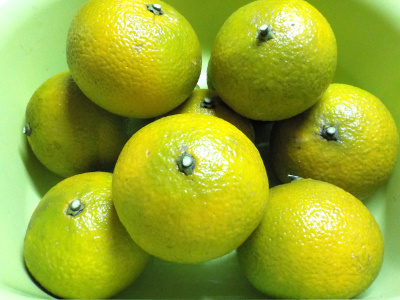
まだ少ししか黄色くなっていませんが、もう甘くなってました。
今の時期は水分が沢山あってジューシーなので、ドンドン食べようと思っています。
寒さに当たって水分が減って、濃い味のミカンも好きだったりします。
【みかんTOP】
【果物TOP】
【園芸TOP】
2023/10/09
ミカンを大量廃棄です。
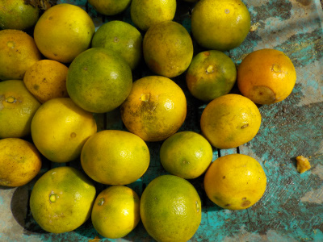
この木は以前にも同じ病気になって、ミカンが腐って落ちました。
回りの柑橘の木は病気が出ていないので、この木が特別弱っている可能性があります。
冬になったら剪定を多めにして、小さくてしようと思っています。
【みかんTOP】
【果物TOP】
【園芸TOP】
2023/05/16
挿し木のミカンは葉っぱが全部落ちました。
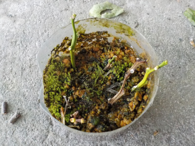
ペットボトルの水抜き穴が詰まって、挿し木が水浸しになっていました。
そりゃ枯れるでしょう。
気が向いたらまたします。
【みかんTOP】
【果物TOP】
【園芸TOP】
2023/05/08
ミカンの木のまわりは甘い匂いです。
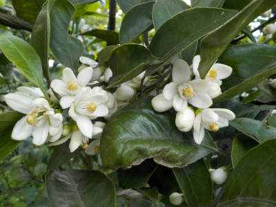
花が咲きだしたので、木の回りは甘いいい匂いがします。
ちょっと癒されます。
【みかんTOP】
【果物TOP】
【園芸TOP】
2023/01/03
ミカンの木を1本剪定しました。
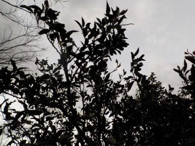
ちょっと時間があったので温州ミカンの木を1本剪定しました。
ハシゴを使わなくてもいいサイズなので簡単でした。
【みかんTOP】
【果物TOP】
【園芸TOP】
2022/12/20
まだ少し青いですが、スイートスプリングを食べました。
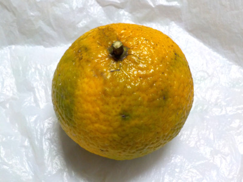
スイートスプリングは青くても甘いはずなので、収獲して味見しました。
食べてみたところ、甘くなってました。実が沢山付いてて木が重そうなので、これからドンドン食べるつもりです。
【みかんTOP】
【果物TOP】
【園芸TOP】
2022/12/18
木に残っていた温州みかんを全部収獲しました。
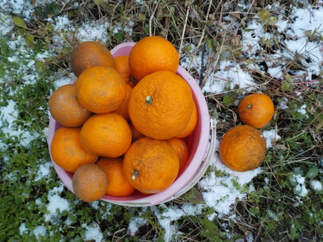
今まで食べる分だけ収獲していたんですが、もうしっかり熟れているので全部収獲しました。
他の柑橘も食べるので、お正月までは持ちそうです。
【みかんTOP】
【果物TOP】
【園芸TOP】
2022/11/27
巨大な温州ミカンを収獲しました。
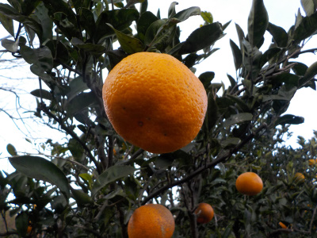
オレンジ色になったので、ミカンを収獲しました。
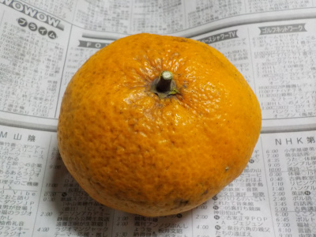
実っている数が少ないせいか、ミカンがとっても大きいです。
このミカンは直径10センチあります。大きいせいか味はちょっと薄かったです。
【みかんTOP】
【果物TOP】
【園芸TOP】
2022/10/23
ミカンの挿し木の現状です。
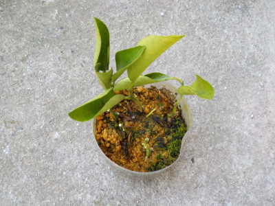
只今3本に葉っぱが残っています。葉が落ちたものも茎は青々としています。
前回は挿し木して直ぐに枯れて悔しかったのでペットボトルで再挑戦したんですが、ここまで枯れなかったのでとりあえず満足です。
ペットボトルの効果って凄いですね。
後は根っこが出ればいいんですが、どうでしょうね。
【みかんTOP】
【果物TOP】
【園芸TOP】
2022/10/23
温州ミカンが黄色くなってきました。
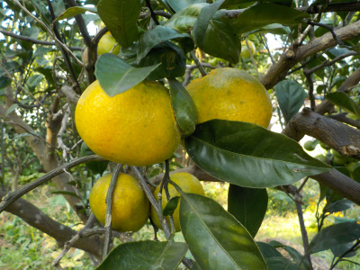
家にある柑橘系では、この温州みかんが一番色付いています。二番めは柚子です。
もうちょっとで食べれそうですが、充分に美味しくなってから食べたいです。
【みかんTOP】 【果物TOP】 【園芸TOP】
2022/08/20
みかんに幼虫がいました。
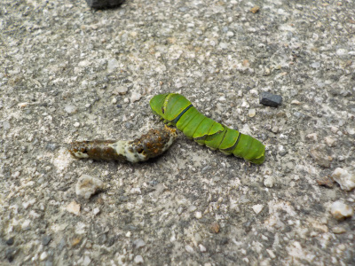
この2匹に小さいミカン苗の葉っぱを沢山食べられてしまいました。
また成長がストップです。
またスプレーをして予防します。
【みかんTOP】 【果物TOP】 【園芸TOP】
2022/07/28
固そうなみかんが転がっています。
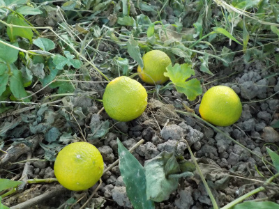
小さくて固そうなミカンがあちこちで落ちてます。
固いので腐ってなくなる感じがしないです。
いつまで残っているかな。
【みかんTOP】 【果物TOP】 【園芸TOP】
2022/06/19
今度はペットボトルでミカンの挿し木に挑戦。
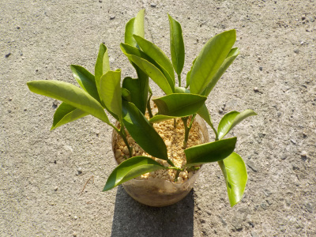
前回した挿し木が簡単に枯れてしまったのは何故だろうと思い、再び挿し木しました。
今回は葉っぱを小さく切らないで、ペットボトルで密閉しました。
これですぐ枯れたら、このミカン（スイートスプリング）は挿し木が向いていないって事になるかな。
【みかんTOP】 【果物TOP】 【園芸TOP】
2022/06/04
ミカンにガットサイドSを塗りました。
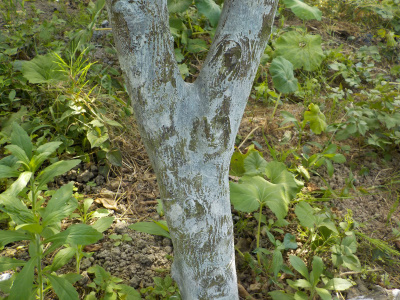
みかんに虫が入った記憶はないんですけど、虫が入るって情報があったので念のため塗りました。
みかんの木にカミキリはよくいるので、いつ入ってもおかしくはないです。
【みかんTOP】 【果物TOP】 【園芸TOP】
2022/06/03
ミカンの挿し木が枯れています。
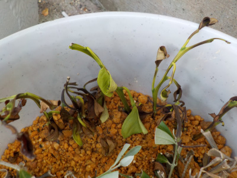
茶色くなりました。腐ってますね。
ひょとして、ミカンの葉っぱってカットしたらダメになる性質とかあるのかな？
2週でここまで枯れることってなかなかない気がする。
【みかんTOP】 【果物TOP】 【園芸TOP】
2022/06/02
みかんの葉っぱが食べられていました。
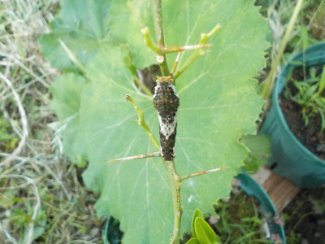
小さい木の葉っぱは柔らかくて食べやすいんでしょうね。
ごっそり食べられてしまいました。またミカンが復活するまでに時間がかかりそうだな。
【みかんTOP】 【果物TOP】 【園芸TOP】
2022/05/22
スイートスプリングを挿し木しました。
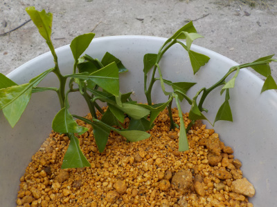
枝が通路側に飛び出してて邪魔だったので剪定しました。
もうすぐ梅雨が来ると思うので、その枝を使って挿し木しました。
みかんの挿し木は今まで全滅ですが、希望を持ってやってます。
今回は葉っぱの数を多くしましたが、葉っぱを切って面積を小さくしました。
【みかんTOP】 【果物TOP】 【園芸TOP】
2022/05/14
みかんの花色々。
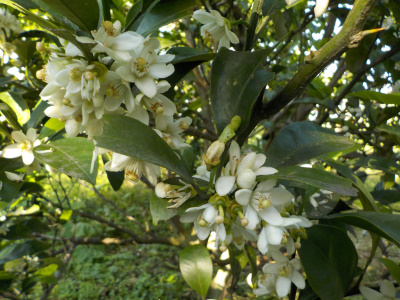
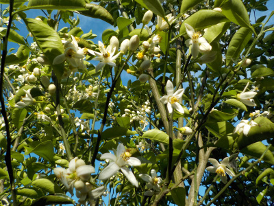
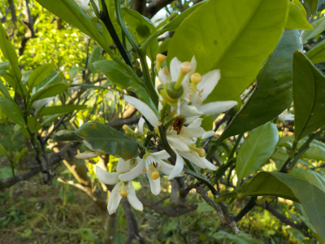
3枚画像がありますが、それそれ品種が違います。
白い花自体は似ていますが、花の大きさや花の付き方はそれそれ違いますね。
種類が違うので当然かな。いや、もっと違っていてもいい気がする。
【みかんTOP】 【果物TOP】 【園芸TOP】
2021/12/11
表面ガサガサのミカンを収穫しました。
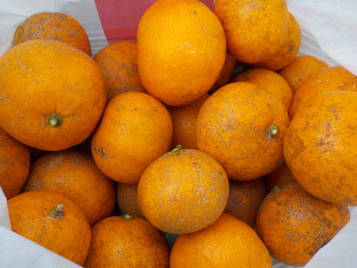
食べるぶんだけ収獲していたミカンですが、実が乾燥してきたので全部収獲しました。
美味しそうなものから収獲していたので、残ったのは小さかったり傷が付いてます。
早いうちに美味しく食べようと思います。
【みかんTOP】 【果物TOP】 【園芸TOP】
2021/11/07
ミカンはまだ甘さが足りませんでした。
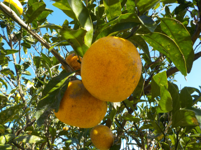
そろそろ甘くなったんじゃないかと思い、一つ食べました。
まだ早かったみたいで甘さがたりませんでした。
もうちょっと待とうと思います。
【みかんTOP】 【果物TOP】 【園芸TOP】
2021/07/13
ミカンの挿し木をしました。
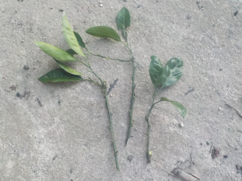
みかんの挿し木はもうやらないつもりでしたが、またやりました。
今回はちょっと長めの枝で挑戦です。長いのは30センチくらいあります。
いろいろやってみるのが楽しいんですよね。
【みかんTOP】 【果物TOP】 【園芸TOP】
2020/10/24
ミカンが痛む前に食べることにしました。
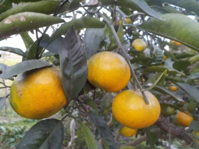
今日は痛んで落ちたミカンと木に付いたまま痛んだミカンを離れた場所に埋めました。
近くにあると病原菌が伝染するそうです。
残ったミカンもいつ痛むかわからないので、ドンドン食べることにしました。
まだ少し青いですが、十分甘くて美味しいです。
【みかんTOP】 【果物TOP】 【園芸TOP】
2020/10/18
みかんが沢山腐って落ちています。
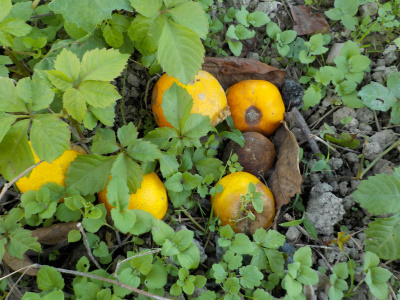
褐色腐敗病かな？
今年は気温が高いのでウイルスが増殖したのかな？
実が沢山出来ていただけにとっても残念です。
【みかんTOP】 【果物TOP】 【園芸TOP】
2020/08/01
みかんの挿し木の結果です。
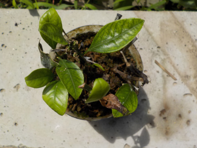
3月に挿し木したミカンです。
5か月経って青々した葉っぱがあるので、これは成功でしょうって確認してみたら根っこがありませんでした。
残念。
たぶんもう柑橘の挿し木はしない。
【みかんTOP】 【果物TOP】 【園芸TOP】
2020/06/07
ミカンの挿し木の途中経過
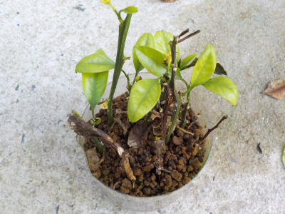
青々した葉っぱがありますが、これは根っこのおかげかな？
木の栄養を消費して育っているだけなのかな？
根っこが生えてて欲しいものです。
【みかんTOP】 【果物TOP】 【園芸TOP】
2020/05/17
ミカンの花は無駄に多いですね。
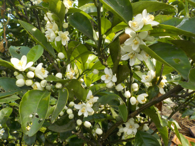
花はこんなに沢山いらないと思う。
花見ができますね。
【みかんTOP】 【果物TOP】 【園芸TOP】
2020/03/01
温州みかんの挿し木をしました。
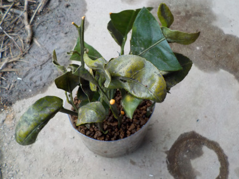
一つのペットボトルに沢山挿したのでギュウギュウです。
葉っぱが沢山あるので、落ちたら腐敗して汚れそうだな。
【みかんTOP】 【果物TOP】 【園芸TOP】
2020/02/27
ミカンの水挿しはたぶん失敗。
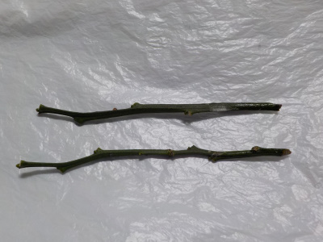
枝は緑色で枯れた感じはしないですが、葉っぱも根っこもないのだだぶんダメだと思います。
【みかんTOP】 【果物TOP】 【園芸TOP】
2019/11/02
スポンジ挿し木のその後

黒くなったので枯れましたね。
【みかんTOP】 【果物TOP】 【園芸TOP】
2019/10/20
1週間前にみかんの水挿しをしました。
スポンジを水に漬けて水挿しです。

1週間で葉っぱが何枚か落ちました。
来週には全部落ちるかも。
【みかんTOP】 【果物TOP】 【園芸TOP】
2019/09/28
ペットボトル挿し木の結果
葉っぱは全部落ちています。
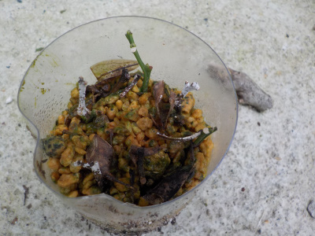
緑の枝が少し残っていました。
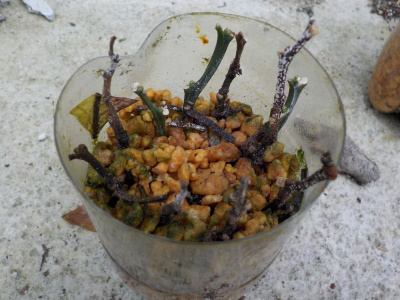
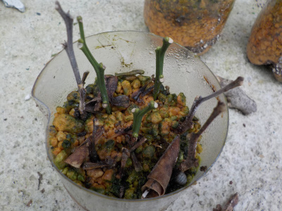
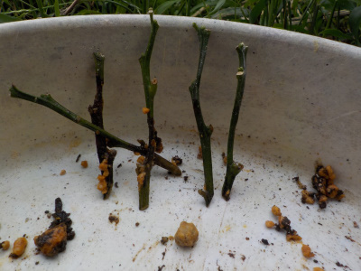
引っ張り出して見たところ根っこはなさそう。
今までよく緑のままでいれましたね。
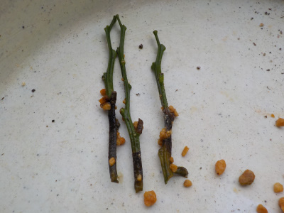
これはスイートスプリングって名前のみかんです。
こちらも根っこはないです。
【みかんTOP】 【果物TOP】 【園芸TOP】
2019/07/07
ペットボトルでみかんの挿し木
ネットで確率は低いけど出来るって内容のものがあったので挑戦しました。
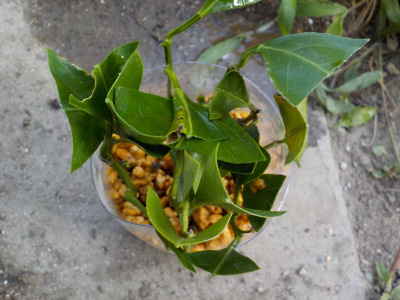
【みかんTOP】
【果物TOP】
【園芸TOP】
畑仕事じゃないよ。
【おいしいものを食べよう。】【たくさん寝よう。】
【ソロ活をしよう!】【季節感のあることをしよう。】【動画視聴はほどほどに。】【当サイトの全てのコンテンツは無断転載禁止です。】